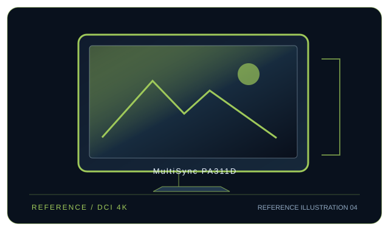

[ INDIVIDUAL COMPONENT // DISPLAYS ]
NEC MultiSync PA311D
31.1-inch DCI 4K color-reference LCD with SpectraView processing and USB-C connectivity.

IDENTIFICATION: Sharp / NEC model MultiSync PA311D. Confirm the full rear-label model, region and hardware revision; published capabilities can differ by firmware, input board and bundle.
Specifications
| Catalog subcategory | Professional displays |
|---|---|
| Exact model / panel | 31.1-inch IPS LCD with wide-gamut LED backlight |
| Native resolution | 4096 × 2160 (DCI 4K, 17:9) |
| Refresh rate | Up to 60 Hz at native DCI 4K timing |
| Color gamut | 100% Adobe RGB and 98% DCI-P3 (manufacturer stated); emulation modes also include Rec.709 and BT.2020. |
| Calibration features | SpectraView Engine with internal 14-bit 3D LUT; SpectraView II software and a compatible external sensor support display hardware calibration. It has no built-in measurement probe. |
| Inputs / companion ports | DisplayPort 1.2 × 2, HDMI 2.0 × 2, USB-C DP Alt Mode (up to 65 W), USB hub and LAN control. |
| VESA / mounting | 100 × 100 mm VESA mount. |
| Power | AC 100–240 V; typical 84 W, maximum 187 W; USB-C host power delivery up to 65 W. |
Compatibility and deployment
A host GPU must support 4096 × 2160 at 60 Hz on the selected DisplayPort 1.2 or HDMI 2.0 connection. USB-C video requires DP Alt Mode; the monitor USB-C output is up to 65 W. Calibration requires SpectraView II-compatible host software and an external supported sensor.
Preservation notes
Record the complete rear-label SKU, serial/date code, installed firmware and options, calibration report, supported signal timing, tested source and cable, mounting hardware, regional AC rating and image condition. Keep the original hood/stand and model-specific setup documentation with the display; use trained service personnel for internal work.
Manufacturer documentation and references
- Sharp/NEC — PA311D specifications brochureManufacturer product or specification reference for model identification and published capabilities.
- Sharp/NEC — PA311D user manualManufacturer support, user guide or product-specific documentation.